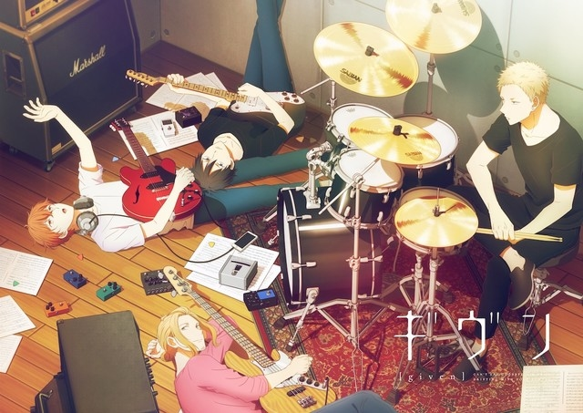
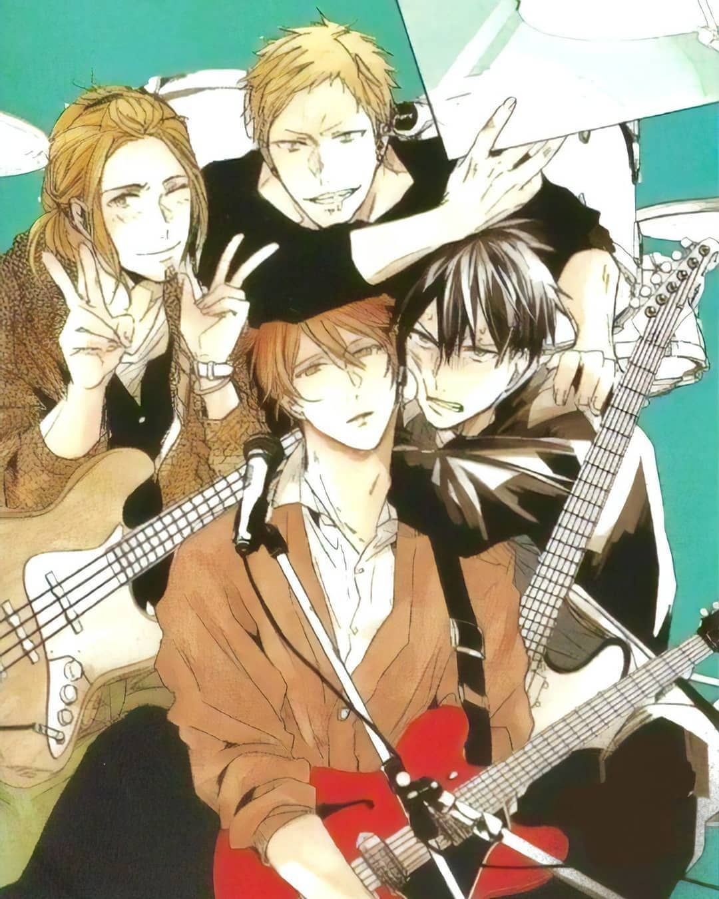

Given
Estudio : Lerche
Precio : 3€
Given es un anime basado en el manga del mismo nombre. Trata la historia de un chico Ritsuka Uenoyama que en su descanso de clases se encuentra con Mafuyu Sato sujetando una guitarra con las cuerdas rotas. En el momento en que Uenoyama termina de arreglar la guitarra, Mafuyu se queda prendado completamente de él. Sin embargo, escuchar la canción de Mafuyu por casualidad deja una profunda impresión en Uenoyama.
Tras esto, Uenoyama lo invita a formar parte de su banda junto a Haruki Nakayama y a Akihiko Kaji. Él acepta y a partir de aquí vemos como se va desarrollando las relaciones entre estos personajes principalmente.
Cast
| Personajes | Seiyū |
|---|---|
| Mafuyu Sato | Shougo Yano |
| Ritsuka Uenoyama | Yūma Uchida |
| Hiiragi Kashima | Fumiya Imai |
| Haruki Nakayama | Masatomo Nakazawa |
| Ugetsu Murata | Shintarō Asanuma |
| Akihiko Kaji | Takuya Eguchi |
Enlaces Externos
TVアニメ『ギヴン』公式サイト - Sitio web oficial de GivenTVアニメ ギヴン』公式サイト (@given_anime) - Twitter Oficial (japonés)